hyprland + quickshell, already put together
cyan1de
Beginner-friendly feature rich configuration for Hyprland
Hyprland with the annoying parts already handled. Every setting still lives in a file you can open.
Press Super + Space to find anything.
why this exists
A desktop filled with features, made for literally everybody
No scavenger hunt through dotfiles. The panel, launcher, settings, notifications, lockscreen, media controls, and the small details are already wired together — and still editable.
no account, no cloud, no mystery daemon
casual
For the casual user
A user friendly settings menu to customize all aspects of your desktop. Make cyan1de look however you want.
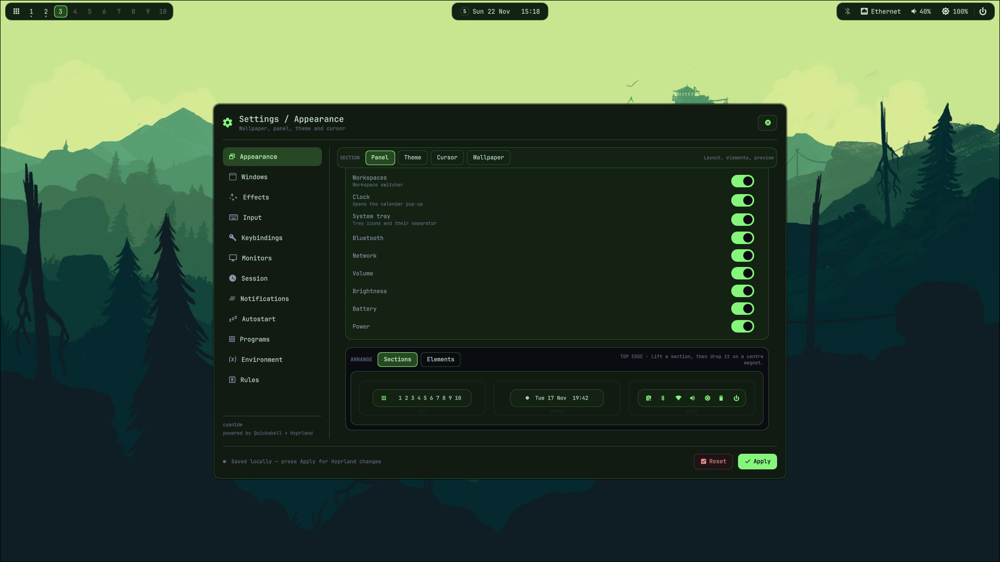
Customize your keyboard shortcuts to maximize your unproductivity.

Place your monitors wherever you want. Change the resolution, refresh rate, scale and orientation right inside the settings.
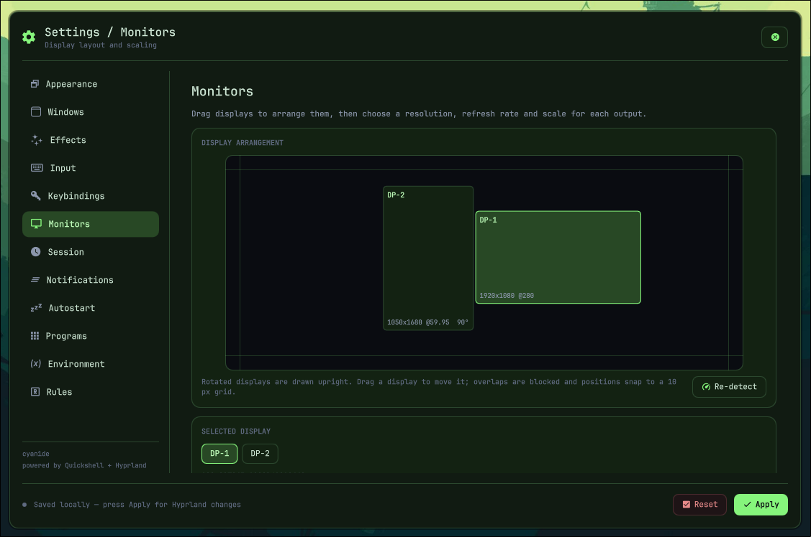
Emojis and clipboard history, right at your fingertips
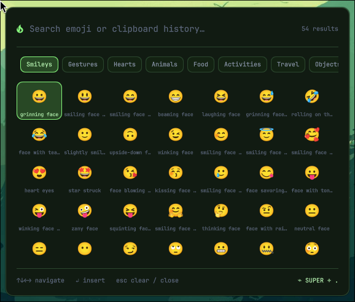
A panel on the top to see and access quick actions
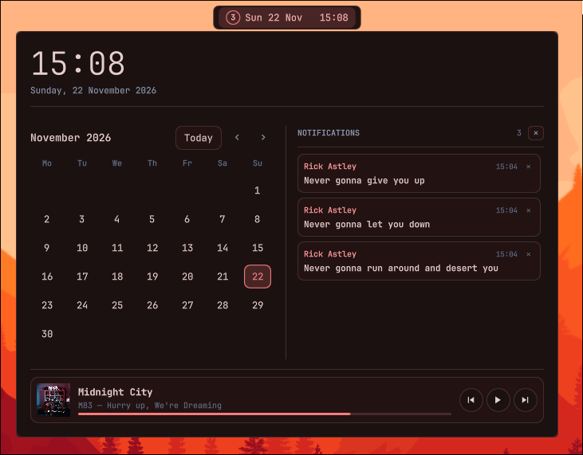
gamer
For the Gamer
Finally, a native way to clip and record your bestor worst moments
The replay buffer keeps the last minute ready to save. Desktop audio and your microphone live on separate channels, so a clip sounds the way you meant it to.
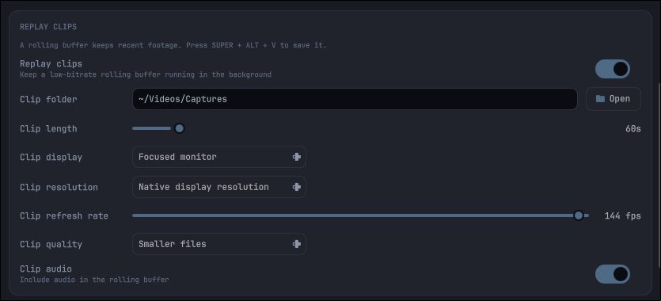
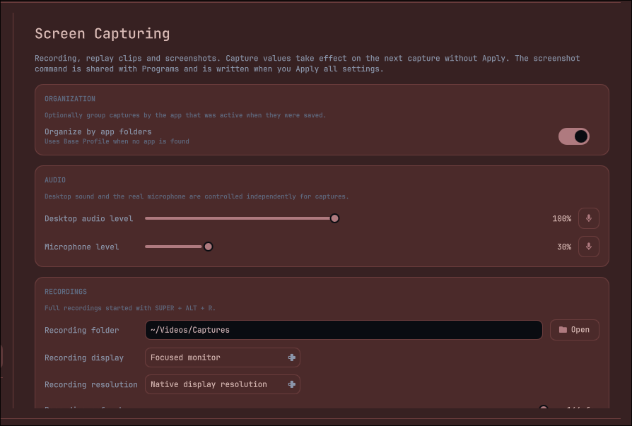
developer
For the developer
Alacritty, terminal-first launcher actions, and a compact OSD make this a comfortable daily driver for development. The configuration stays readable: Lua for Hyprland, QML for Quickshell, and a graphical settings app when you do not feel like opening either.
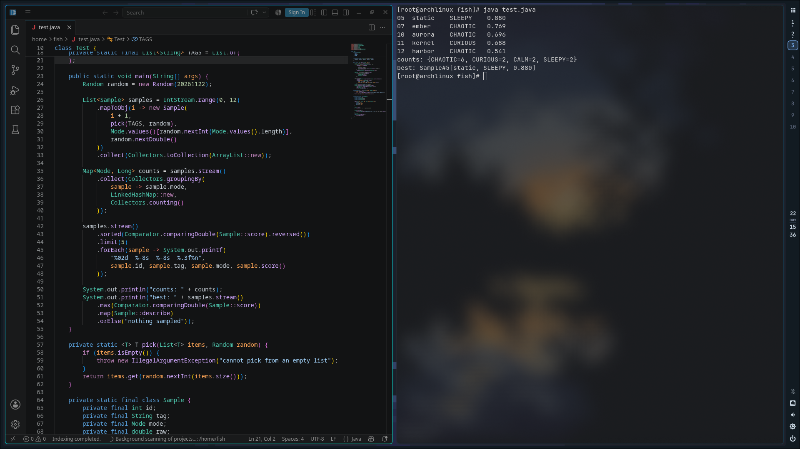
- Ten workspaces, a scratchpad, and keyboard-driven window control
- Visual settings for appearance, windows, input, monitors, and rules
- Launcher actions for apps, files, calculator results, and web searches
- Plain config files that are easy to read, diff, and back up
screenshots
A close-up of the little things
Every screenshot below comes from the real config. No mockups, no imaginary widgets.
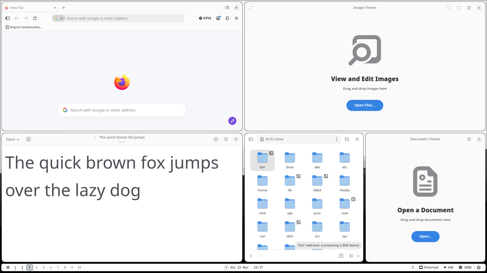
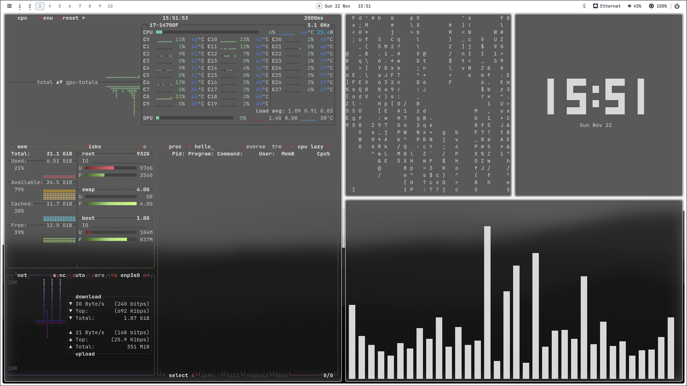
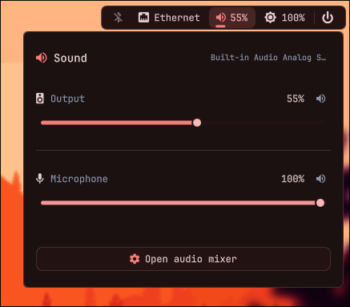
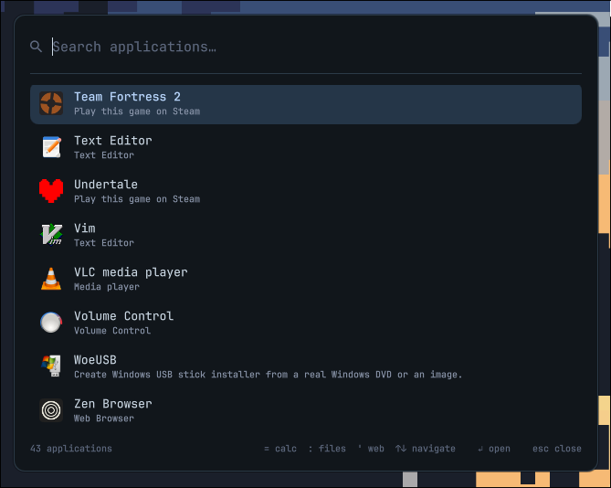
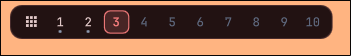
setup
Get cyan1de
Made for Arch-based systems. The installer backs up what you had, offers to install the packages you need, then hands you a complete config.
git clone https://github.com/lnxperson/cyan1de
cd cyan1de
chmod +x install.sh
./install.sh- Timestamped backups of existing
~/.config/hyprand~/.config/quickshell - Optional
pacmanpackage installation, with defaults set only when apps are present - Best-effort setup for Bluetooth, NetworkManager, power profiles, fingerprint, and PipeWire services
- Reload Hyprland or log out and back in when the installer finishes
Want the full package list and notes? Read the README.
maker
I actually use it
cyan1de is maintained by lnxperson. It is a portable desktop config, not a distro and not a locked-in ecosystem. Fork it, break it, put it back together, and make it yours.
View the repository